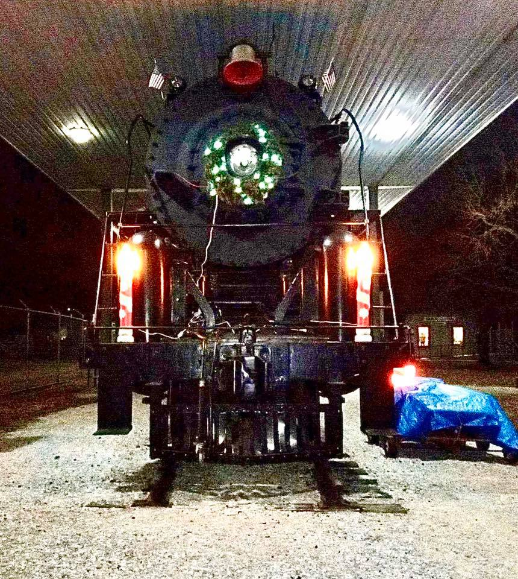
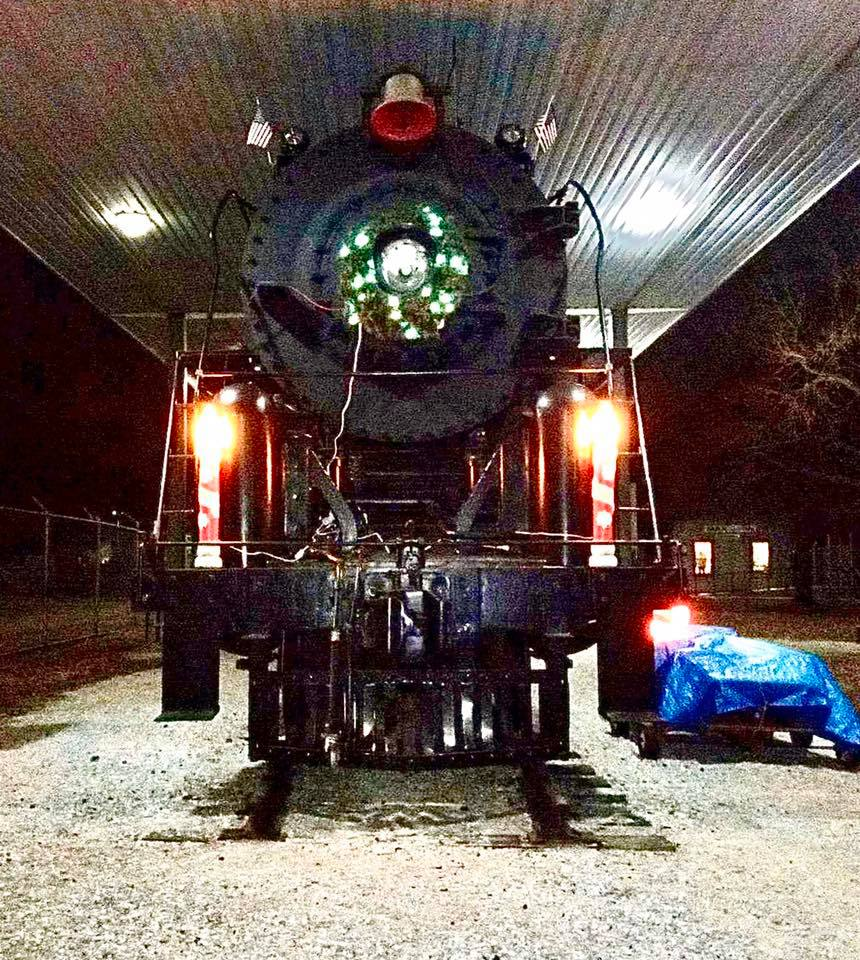

About us:
The Railroad Historical Museum is a nonprofit dedicated to the preservation of Railroad History and the heritage of the past, educating present and future generations.
For enthusiasts of all ages, our museum offers an interactive experience with a plethora of hands-on activities.

 
